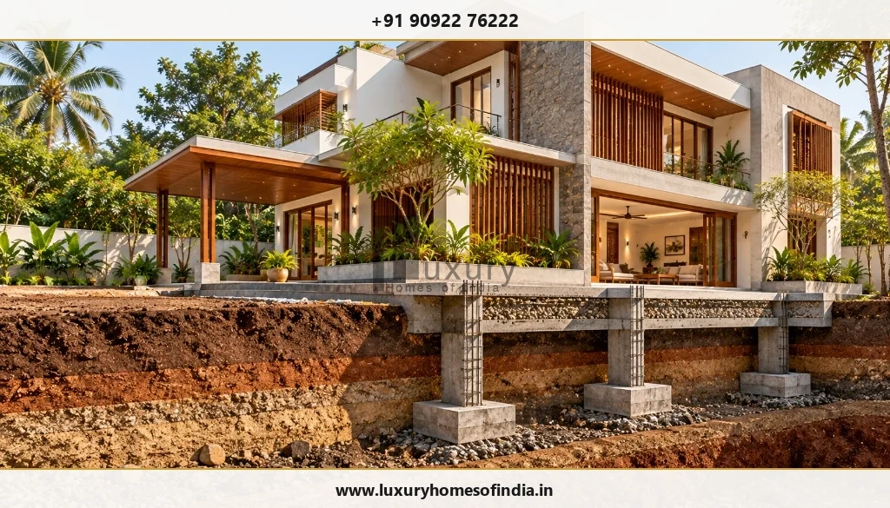
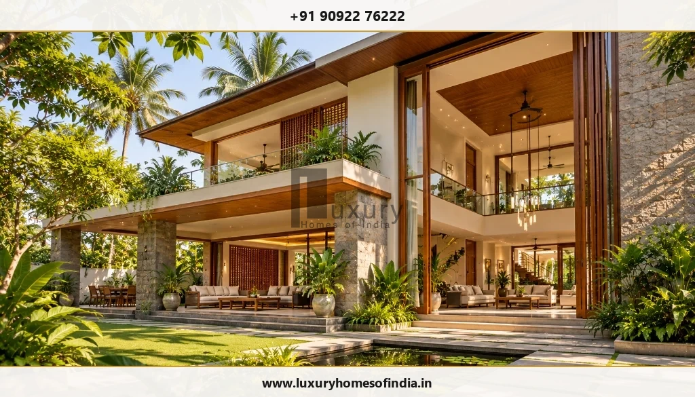
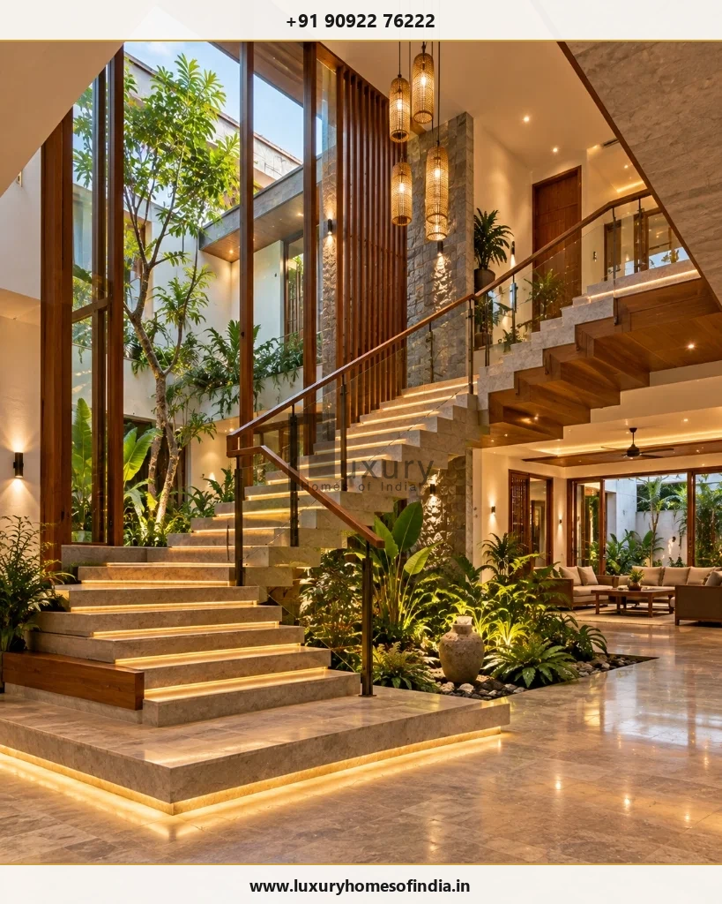
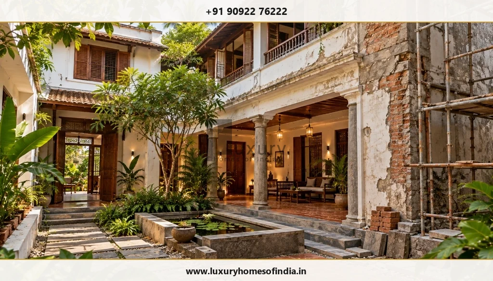

Give your architectural vision a considered engineering foundation.
A distinctive home needs more than an attractive plan.
Large openings, double-height living rooms, terraces, bespoke staircases, rooftop features and specialist amenities can all influence structural decisions. These requirements are best considered alongside architecture rather than left to resolve after the design is fixed.
At Luxury Homes of India, structural engineering is part of the residential services offered alongside architectural planning and construction.
If you are exploring structural engineering for luxury homes in Chennai, the right starting point is your actual site, architectural proposal and the features that make your home individual.

Architecture and structure should develop together
Structural design needs to support the building while responding to its architectural intent.
Room arrangements, floor levels, openings and significant features can influence the structural layout. Coordinating these decisions early can help identify conflicts before they become construction-stage changes.
Depending on the project, the discussion may include:
- Foundation requirements
- Structural layout
- Large openings and spans
- Double-height spaces
- Bespoke staircases
- Balconies and terraces
- Rooftop uses
- Pools and lifts
- Interfaces with building services
There is no single structural arrangement that should be applied to every luxury home. The appropriate solution depends on the site, proposed building, loads, architectural requirements and relevant engineering information.
Begin with the site
Foundation design should respond to the ground conditions and the requirements of the proposed building.
A geotechnical investigation can provide information about subsurface conditions and soil characteristics that can inform foundation assessment and design. Foundation decisions should therefore be based on project-specific investigation and engineering rather than assumptions drawn from a neighbourhood or nearby building.
Do not select a foundation solely from:
- The neighbourhood name
- A neighbouring building
- The number of floors
- The appearance of surface soil
- A generic construction package
The responsible structural and geotechnical professionals should establish what information is required for the project.

Engineering considerations for bespoke homes
Large openings and open living spaces
An open-plan layout can influence the structural arrangement. The location of supports needs to be considered alongside room use, circulation, openings and interior requirements. A column or wall should not be removed simply because it interrupts the intended layout.
Double-height rooms
A double-height volume changes the relationship between floors and surrounding structural elements. Architectural sections, structural concepts and adjoining spaces should be coordinated before construction so that the intended volume can be developed with the necessary structural provisions.
Balconies and projecting features
Balconies, canopies and other projections require appropriate structural design and detailing. Their architectural appearance should be developed alongside considerations such as support, drainage, waterproofing interfaces and exposure.
Bespoke staircases
A distinctive staircase involves more than its visible form. Its dimensions, structural support, connections and relationship with surrounding floors need to be coordinated with the architectural and interior design.
Rooftop uses
Gardens, heavy planters, equipment and other rooftop additions can introduce additional loads. Available roof space does not automatically establish structural suitability. Proposed rooftop uses should be identified early enough for the responsible professionals to assess them.
Pools and lifts
Pools, lifts and other specialist features can affect structural openings, loads, foundations and service coordination. Their technical requirements should be identified early and the responsibilities of specialist consultants clearly established.


Coordinate structure with services and interiors
Structural engineering does not exist in isolation from the rest of the home. Electrical routes, plumbing, cooling equipment, ceilings, joinery and specialist systems may need to coordinate with structural elements.
| Project interface | What to resolve |
|---|---|
| Architecture | Layout, levels, openings and significant features |
| Building services | Routes, equipment provisions and required openings |
| Interiors | Ceilings, finishes, joinery and visible structural elements |
| Specialist systems | Lift, pool and equipment requirements |
| External spaces | Levels, drainage and building connections |
Unplanned cutting or alteration of structural elements should not be treated as a routine installation adjustment. Proposed changes should be referred to the responsible engineer.
Clear drawings and responsibilities
Before appointing a structural-engineering team, understand what the service includes. Clarify:
- Design inputs and assumptions
- Investigation information being relied upon
- Analysis and design responsibilities
- Structural drawings and details
- Coordination with the architect
- Review and revision procedures
- Construction-stage involvement
- Documentation and certification, where applicable
- Fees and exclusions
Concept information is not a substitute for the drawings and documentation required for construction.
Design decisions need to reach the site
A structural design can guide construction only when the relevant information is understood and followed.
Project responsibilities should clearly identify who is responsible for:
- Working from approved drawings
- Raising questions before proceeding
- Reviewing proposed substitutions
- Coordinating required inspections
- Recording authorised revisions
- Addressing relevant findings during construction
Material testing, workmanship checks and professional reviews should be defined for the individual project rather than described through blanket promises.
Changes require engineering review
Moving an opening, altering a staircase or adding a rooftop feature may affect more than the visible layout. Before changing the proposal, establish:
- What is being altered.
- Which drawings may need revision.
- Whether further assessment is required.
- The implications for construction.
- Any relevant approval consequences.
- Who is responsible for reviewing and authorising the change.
Do not assume that a modification is acceptable simply because it appears small.
Existing homes need a separate assessment
Structural work on an existing property requires information about the building already in place.
Existing drawings, condition, previous alterations and proposed changes may all be relevant. A new design should not assume that existing members or foundations can support additional work.
Before removing structural elements, adding floors or introducing significant new loads, obtain a project-specific structural assessment.

Structural engineering with LHI
Luxury Homes of India currently publishes Structural Engineering as part of its residential offering, including building analysis and foundation design.
For your appointment, confirm:
- The engineer responsible for the design
- Their verified qualifications and applicable credentials
- The scope of analysis and drawings
- Coordination responsibilities
- Construction-stage review arrangements
- Any services provided by external consultants
A clear appointment helps you understand the expertise, responsibilities and deliverables behind the project.
Frequently asked questions
Let’s connect your design vision with its structural requirements
Bring your plans and the features that matter to you.
Speak with Luxury Homes of India about structural engineering that responds to your site, architecture and construction scope.
Call: +91 90922 76222
Email: info@luxuryhomesofindia.in